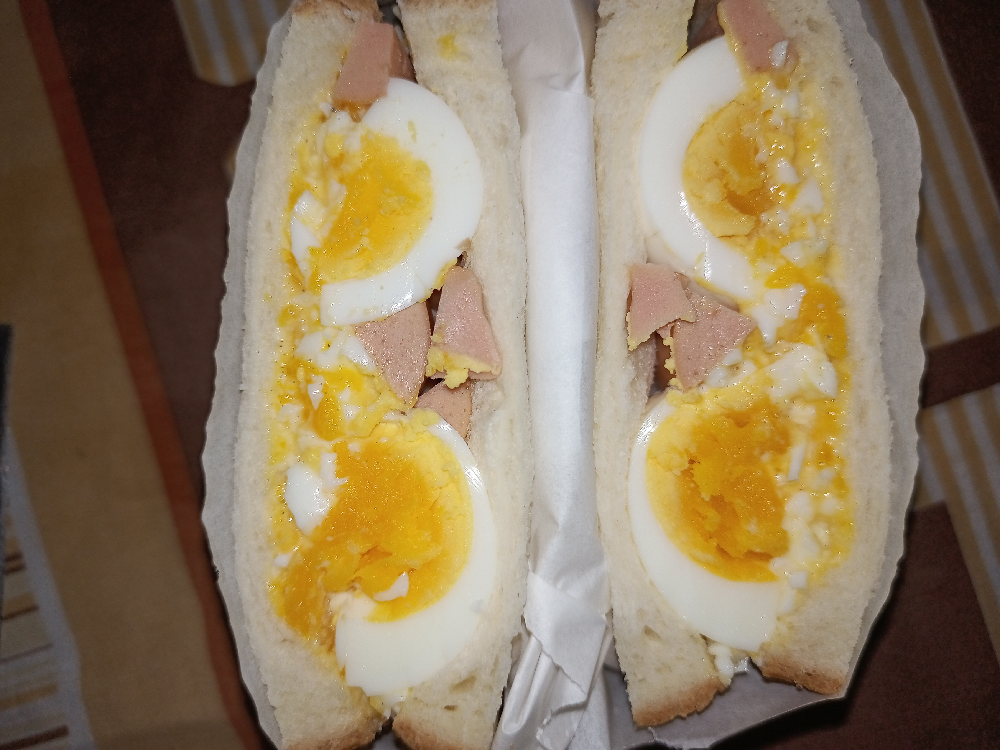

Kuribo Sandwich

Bahan Bahan:
- Telur (4pcs)
- Roti tawar (4-6 lembar)
- Mayonaise
- Garam
- Merica
- Sosis (opsional)
Alat Alat:
- Panci
- Garpu
- Pisau
- Mangkuk
- Chopping board
- Plastic wrap/kertas pembungkus nasi
Cara Pembuatan:
- Rebus terlebih dahulu telur selama 6-7 menit
- Setelah 6-7 menit siapkan juga mangkuk berisi air dingin
- Simpan telur dalam mangkuk berisi telur dingin hingga telur sudah tidak panas
- Kupas cangkang telur
- Siapkan mangkuk lagi lalu pindahkan telur ke mangkuk baru
- Beri mayonaise, garam dan merica secukupnya
- Haluskan dan campur rata telur yang sudah diberi bumbu dan mayonaise
- Siapkan chopping board dan toping sosis
- Potong sosis menjadi kecil kecil sesuai selera
- Siapkan 2 lembar roti tawar
- Oleskan campuran telur tadi ke 1 sisi lembar roti
- Masukan juga toping sosis
- Tutup roti yang sudah diisi telur dan sosis dengan lembar roti lain dan tekan
- Bungkus roti kedalam plastic wrap lalu potong bagi 2
- Sandwich pun siap untuk dinikmati
Selamat mencoba!